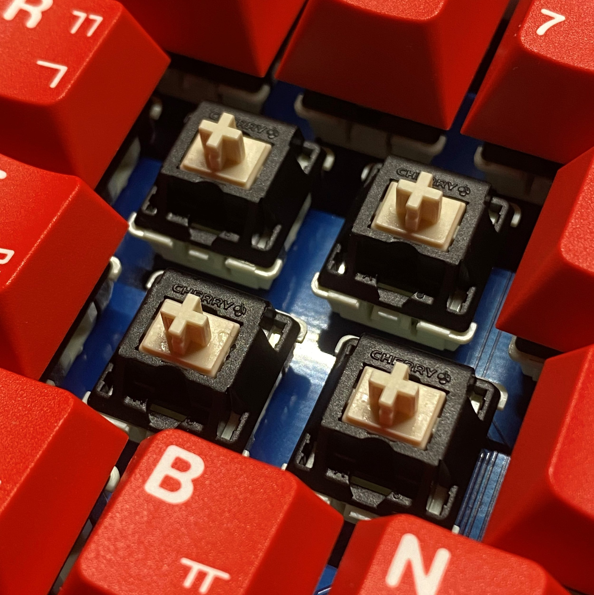

Black Cherry Pie

Description
The Black Cherry Pies are one of the most popular linear frankenswitches.
The BCPs have become a fairly commonly instituted frankenswitch that is readily featured in a rather large number of sound tests on YouTube.
Ingredients
- JWK bottom housing (H1, Alpaca, Jwick)
- Kailh cream stem (or equivalent like Kailh black stem)
- Any stock or aftermarket spring of your choice (JWK stock springs recommended over the Kailh or Cherry springs)
- Cherry top housing
Steps
- Harvest JWK bottoms from a linear JWK switch (H1, Alpaca, Jwick).
- Make sure you keep the JWK springs if you don't plan on buying any aftermarket springs!
- Harvest Kailh cream stems from a Novelkeys Cream switch.
There are many other alternative stems that can be used for the BCPs like the Kailh black switches.
- Harvest the top housing from a Cherry MX switch. It is recommended to harvest them from Cherry MX Black switches.
- Begin assembling the switch, take a JWK bottom housing and lube it with Krytox 205g0.
- Take your spring and lube it. Place it on the pole of the JWK bottom housing.
- Take your Kailh stem and lube it. Place it on the spring where the legs of the stem face towards the leaf of the bottom housing.
- Finish assembling the switch by snapping on the Cherry top housing on your Black Cherry Pie switch. There is no need to lube the top housing.
Congrats! You have created your Black Cherry Pie switches!
Sources